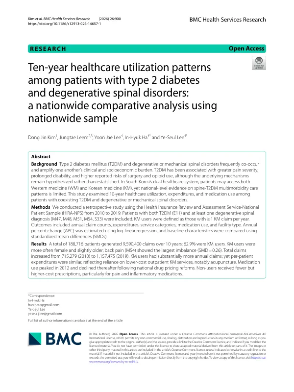

Ten-year healthcare utilization patterns among patients with type 2 diabetes and degenerative spinal disorders: a nationwide comparative analysis using nationwide sample
Kim DJ, Leem J, Lee YJ, Ha IH, Lee YS
BMC Health Services Research 26(1):900

첫 장 · 오픈액세스First page · open access
논문 소개Summary
2형 당뇨병과 퇴행성·기계적 척추질환을 함께 가진 환자의 10년간 의료 이용을 본 후향적 연구입니다. 건강보험심사평가원 환자표본자료 2010-2019년에서 두 상병을 함께 가진 188,716명의 청구 9,590,400건을 분석했고, 한 해 한 건 이상 한의 청구가 있으면 한의 이용자로 보았습니다. 62.9%가 한의 이용자였습니다. 총 청구는 715,279건에서 1,157,475건으로 늘었습니다. 한의 이용자는 연간 청구 건수가 뚜렷이 많았으나 1인당 진료비는 비슷했는데, 침 같은 저비용 외래에 기댔기 때문입니다. 한의를 쓰지 않는 환자는 처방 건수가 적은 대신 통증·소염 약제를 중심으로 건당 비용이 높았습니다.
A retrospective study of ten years of healthcare utilisation among patients who have both type 2 diabetes and degenerative or mechanical spinal disorders. Using the Health Insurance Review and Assessment Service National Patient Sample from 2010 to 2019, the authors analysed 9,590,400 claims from 188,716 patients carrying codes for both conditions, defining Korean medicine users as those with at least one Korean medicine claim per year. Some 62.9% were Korean medicine users. Total claims rose from 715,279 to 1,157,475 over the decade. Korean medicine users generated markedly more annual claims, yet per-patient expenditure was similar, reflecting reliance on lower-cost outpatient services such as acupuncture. Non-users received fewer prescriptions but at higher cost per prescription, particularly for pain and inflammatory medications.
인용Cite
Kim DJ, Leem J, Lee YJ, Ha IH, Lee YS. Ten-year healthcare utilization patterns among patients with type 2 diabetes and degenerative spinal disorders: a nationwide comparative analysis using nationwide sample. BMC Health Services Research. 2026;26(1):900. doi:10.1186/s12913-026-14657-1